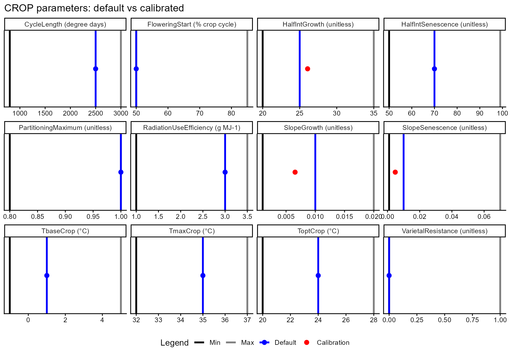
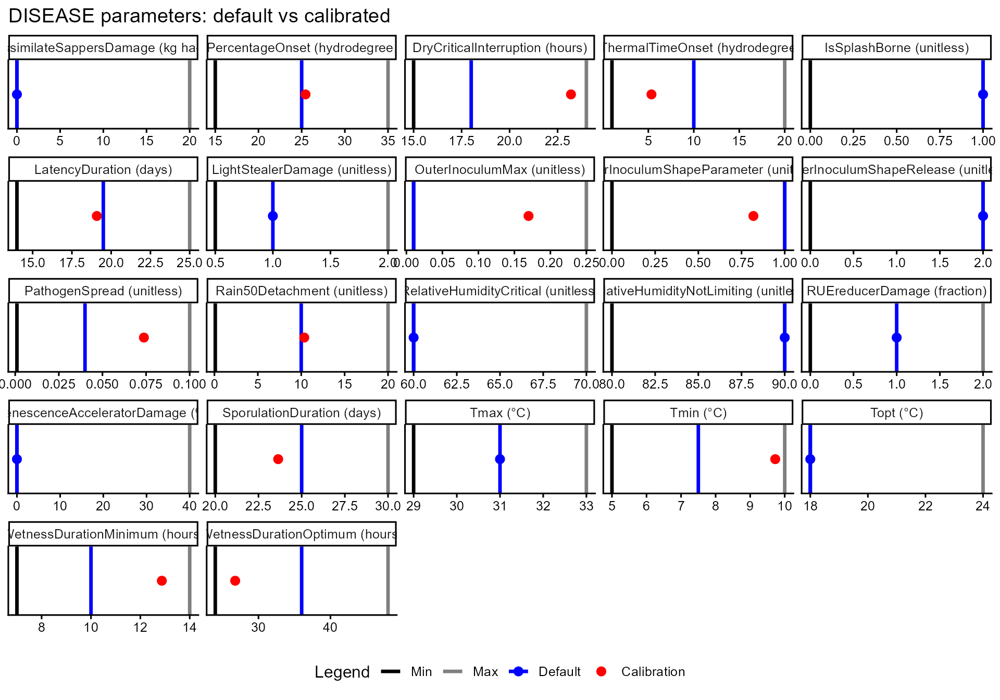

Septoria on wheat in Indiana
Source:vignettes/case-study-indiana-septoria.Rmd
case-study-indiana-septoria.Rmd🎯 Goal
This vignette walks through the process of fitting Septoria tritici blotch severity data in Indiana using FraNchEstYN. We will use the example datasets bundled with the package:
-
weather_indiana: daily weather data (NASA POWER)
-
reference_indiana: digitized disease observations from Shaner & Buechley (1995)
-
management_indiana: sowing and crop management metadata from the same article.
📦 Packages
We load the FraNchEstYN package plus some helper libraries for data handling, tables, and plotting.
📥 Data loading
The three Indiana datasets are included with the package. Below we load them and preview a few rows to illustrate their structure.
| site | year | month | day | tx | tn | p | rad |
|---|---|---|---|---|---|---|---|
| Indiana | 1972 | 1 | 1 | 6.623 | -2.085 | 0.000000 | 7.45 |
| Indiana | 1972 | 1 | 2 | 2.450 | -3.212 | 3.313559 | 9.44 |
| Indiana | 1972 | 1 | 3 | 5.360 | -2.956 | 0.000000 | 8.31 |
| site | year | DOY | FINT | Disease |
|---|---|---|---|---|
| Indiana | 1973 | 144 | 1.00 | NA |
| Indiana | 1973 | 187 | 0.25 | NA |
| Indiana | 1974 | 141 | 1.00 | NA |
| site | crop | variety | year | sowingDOY |
|---|---|---|---|---|
| Indiana | wheat | Generic | 1972 | 278 |
| Indiana | wheat | Generic | 1973 | 271 |
| Indiana | wheat | Generic | 1974 | 275 |
⚙️ Parameters
In FraNchEstYN, crop and disease processes are controlled by parameter sets describing physiological and epidemiological traits.
In this vignette we are only interested in canopy light interception and disease severity, not yield formation.
For wheat: start from defaults, disable calibration of traits unrelated to light interception, and keep canopy dynamics active.
For Septoria: start from defaults, and disable calibration of yield-loss damage mechanisms.
# Load default parameters for wheat
thisCropParam <- cropParameters$wheat
# Disable all calibration, then selectively re-enable light interception
thisCropParam <- set_calibration_flags(
thisCropParam,
disable = c("PartitioningMaximum",
"TbaseCrop", "TmaxCrop", "ToptCrop",
"FloweringStart",
"RadiationUseEfficiency",
"CycleLength", "HalfIntSenescence")
)
# Load default parameters for Septoria
thisDiseaseParam <- diseaseParameters$septoria
# Disable calibration for yield-loss damage mechanisms
thisDiseaseParam <- set_calibration_flags(
thisDiseaseParam,
disable = c("RUEreducerDamage",
"LightStealerDamage",
"SenescenceAcceleratorDamage",
"AssimilateSappersDamage",
"Topt", "Tmax",
"RelativeHumidityCritical", "RelativeHumidityNotLimiting")
)
thisDiseaseParam$OuterInoculumShapeRelease$value <- 2🔧 Calibration model call
With data and parameters prepared, we can call the FraNchEstYN calibration engine. Here we fit both crop and disease model parameters simultaneously, using the Indiana datasets.
Key settings:
-
start_end: simulation period (1971–1991, as in the
article)
-
api_key: required for external API calls, but
not used here
-
franchy_message: set to
FALSEto silence fun messages 😉
-
iterations: number of optimization iterations
(
999, as in the article)
-
calibration: scope of calibration
(
"all"means crop + disease)
This returns a model object df containing diagnostics, parameters, and simulation outputs.
start_end <- c(1971, 1991)
api_key <- "xxx" # not used here for LLM
franchy_message <- FALSE
iterations <- 999 # as in the article; the more iterations, the safer the results
calibration <- "all" # calibrate both crop and disease
df <- franchestyn(
weather_data = weather_indiana,
management_data = management_indiana,
reference_data = reference_indiana,
cropParameters = thisCropParam,
diseaseParameters = thisDiseaseParam,
start_end = start_end,
calibration = calibration,
apikey = api_key,
franchy_message = franchy_message,
iterations = iterations
)📊 Outputs & results
⚖️ Parameter plots
Plots show parameter ranges, defaults, and calibrated values:
-
Black / grey lines = allowable parameter
ranges
- 🔵 Blue vertical line = default value
- 🔴 Red dot = calibrated value (if calibration was enabled)
Note: only the crop parameters controlling canopy light interception are calibrated; all other crop parameters remain at their defaults (blue line only).
df$diagnostics$calibration$plots$crop
df$diagnostics$calibration$plots$disease
📏 Calibration metrics (Disease Severity)
We summarise calibration accuracy for disease severity across seasons using Bias, MAE, RMSE, correlation, R², and NSE.
| GrowingSeason | n | Bias | MAE | RMSE | r | R2 | NSE |
|---|---|---|---|---|---|---|---|
| 1972 | 8 | -0.089 | 0.103 | 0.119 | 0.965 | 0.932 | 0.846 |
| 1973 | 8 | 0.169 | 0.252 | 0.276 | 0.824 | 0.679 | 0.367 |
| 1974 | 6 | -0.162 | 0.162 | 0.179 | 0.991 | 0.982 | 0.253 |
| 1975 | 9 | 0.040 | 0.123 | 0.150 | 0.919 | 0.845 | 0.746 |
| 1976 | 3 | -0.005 | 0.136 | 0.146 | 0.842 | 0.709 | 0.562 |
| 1977 | 5 | 0.003 | 0.077 | 0.091 | 0.871 | 0.759 | 0.476 |
| 1978 | 6 | 0.121 | 0.186 | 0.209 | 0.734 | 0.539 | 0.302 |
| 1979 | 6 | 0.039 | 0.088 | 0.108 | 0.944 | 0.892 | 0.870 |
| 1980 | 8 | -0.129 | 0.129 | 0.139 | 0.983 | 0.967 | 0.745 |
| 1981 | 4 | 0.148 | 0.148 | 0.170 | 0.966 | 0.933 | 0.596 |
| 1982 | 7 | 0.044 | 0.059 | 0.076 | 0.985 | 0.970 | 0.900 |
| 1983 | 4 | 0.106 | 0.106 | 0.112 | 0.979 | 0.958 | 0.136 |
| 1984 | 3 | 0.265 | 0.265 | 0.305 | 0.999 | 0.997 | -20.783 |
| 1985 | 5 | 0.107 | 0.204 | 0.226 | 0.894 | 0.800 | 0.569 |
| 1986 | 5 | -0.301 | 0.301 | 0.387 | 0.556 | 0.309 | -1.380 |
| 1987 | 4 | -0.023 | 0.023 | 0.028 | 0.945 | 0.893 | 0.395 |
| 1988 | 8 | -0.099 | 0.099 | 0.144 | 0.988 | 0.977 | 0.787 |
| 1989 | 7 | -0.067 | 0.079 | 0.096 | 0.975 | 0.951 | 0.867 |
| 1990 | 5 | 0.095 | 0.200 | 0.217 | 0.892 | 0.796 | 0.487 |
| Overall | 111 | 0.002 | 0.140 | 0.182 | 0.800 | 0.640 | 0.635 |
📈 Simulation outputs
🗂️ Season summary
A compact table of disease severity outcomes for each growing season: final severity, peak, timing, and area-under-curve. In all model outputs,GrowingSeason is the sowing year:
season 1972 is the crop sown in autumn 1972 and harvested in 1973 (the
year used in reference_indiana and in the article).
| GrowingSeason | Site | AveTx | AveTn | AveRHx | AveRHn | TotalPrec | TotalRad | TotalLW | AUDPC | DiseaseSeverity |
|---|---|---|---|---|---|---|---|---|---|---|
| 1972 | Indiana | 13.049 | 4.693 | 81.145 | 48.713 | 960.394 | 3880.50 | 2045 | 4479.174 | 0.836 |
| 1973 | Indiana | 13.248 | 4.021 | 79.933 | 45.320 | 1014.288 | 3696.85 | 2199 | 4436.114 | 0.796 |
| 1974 | Indiana | 13.234 | 4.465 | 79.630 | 46.144 | 756.458 | 4212.01 | 1735 | 2819.572 | 0.588 |
| 1975 | Indiana | 13.978 | 3.736 | 78.646 | 41.828 | 585.667 | 4030.95 | 1450 | 2864.375 | 0.561 |
| 1976 | Indiana | 12.544 | 2.869 | 72.861 | 39.738 | 602.275 | 4354.84 | 1206 | 3077.649 | 0.540 |
| 1977 | Indiana | 11.449 | 2.178 | 72.048 | 40.554 | 739.194 | 4245.15 | 1643 | 2948.303 | 0.600 |
| 1978 | Indiana | 12.207 | 2.701 | 75.398 | 41.243 | 759.138 | 4165.68 | 1793 | 3303.951 | 0.579 |
| 1979 | Indiana | 13.114 | 4.048 | 78.073 | 44.044 | 862.394 | 4195.43 | 1621 | 3718.083 | 0.726 |
| 1980 | Indiana | 13.112 | 3.754 | 78.529 | 44.162 | 864.798 | 4099.38 | 1609 | 4207.341 | 0.777 |
| 1981 | Indiana | 12.052 | 2.458 | 74.833 | 41.366 | 919.074 | 4207.87 | 1926 | 3103.448 | 0.695 |
| 1982 | Indiana | 14.118 | 5.309 | 81.506 | 47.335 | 856.556 | 4013.36 | 1647 | 4427.089 | 0.794 |
| 1983 | Indiana | 12.078 | 3.260 | 76.505 | 44.181 | 861.168 | 4022.15 | 1827 | 2828.449 | 0.641 |
| 1984 | Indiana | 13.087 | 3.801 | 78.684 | 44.042 | 931.506 | 3717.97 | 1797 | 2817.001 | 0.568 |
| 1985 | Indiana | 13.164 | 3.986 | 78.205 | 44.756 | 878.517 | 3633.93 | 1722 | 3020.441 | 0.675 |
| 1986 | Indiana | 14.097 | 5.028 | 79.510 | 45.332 | 598.671 | 4093.95 | 1297 | 1277.383 | 0.354 |
| 1987 | Indiana | 14.285 | 4.203 | 76.332 | 40.770 | 628.142 | 4533.43 | 1278 | 2708.160 | 0.530 |
| 1988 | Indiana | 13.473 | 4.163 | 79.597 | 44.178 | 923.550 | 4351.49 | 1894 | 3876.350 | 0.786 |
| 1989 | Indiana | 13.396 | 4.264 | 80.169 | 45.559 | 809.934 | 3944.14 | 1634 | 4016.585 | 0.779 |
| 1990 | Indiana | 14.405 | 4.870 | 80.168 | 44.151 | 771.912 | 3752.57 | 1622 | 3820.187 | 0.705 |
🔄 Leave-one-out cross-validation (LOOCV)
This vignette runs the full-dataset calibration only. The article also reports a leave-one-season-out cross-validation over the 19 growing seasons with observations (sown 1972–1990, harvested 1973–1991): each season is withheld in turn, the model is calibrated on the remaining 18 seasons (333 iterations per fold) and the withheld season is then predicted with calibration switched off.
Note that in reference_indiana the column
year is the harvest year, whereas
simulation outputs are labelled by GrowingSeason (the
sowing year). When withholding a season, remove the
reference rows with year == GrowingSeason + 1.
The four disease parameters fixed above (Topt,
Tmax, RelativeHumidityCritical,
RelativeHumidityNotLimiting), together with crop
CycleLength and HalfIntSenescence, were
identified in a preliminary LOOCV run as having negligible variability
across folds (CV < 5%).
LOOCV results (Willmott’s d, Pearson r, RMSE, MBE) are shown in
Figure 5 and discussed in Section 3.3.2 of the article. The LOOCV takes
about 45 minutes and is not run here; the full script is available in
the package repository
(tests/submission/revision/file analysis/indiana/indiana.R).
📝 Key take-home messages
FraNchEstYN successfully calibrated disease severity for Septoria tritici in Indiana across two decades of observations.
Crop parameters were mostly fixed (default values) — only canopy light interception was active, while disease parameters were calibrated.
The framework provides diagnostics, metrics, parameter estimates, and simulations in a consistent structure, ready for analysis or visualization.
🚀 Next steps
This vignette showed how to calibrate Septoria tritici blotch severity in Indiana using bundled datasets. From here, you might want to:
🌎 Explore other environments: replace weather_indiana, reference_indiana, and management_indiana with datasets from different sites or years.
🌾 Switch crops or pathogens: try other parameter sets available in cropParameters and diseaseParameters.
🎛️ Experiment with calibration scope:
-
"all"→ calibrate both crop and disease models -
"crop"or"disease"→ focus on one component only
📊 Analyze uncertainty: increase the number of iterations or run multiple calibration replicates to assess stability of parameter estimates.
🛠️ Extend the pipeline: integrate with your own management practices or link outputs to yield-loss models.